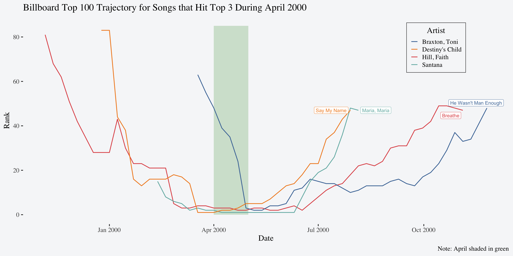

> # A tibble: 5,307 × 7
> year artist track time date_entered week rank
> <dbl> <chr> <chr> <time> <date> <int> <dbl>
> 1 2000 2 Pac Baby Don't Cry (Keep... 04:22 2000-02-26 1 87
> 2 2000 2 Pac Baby Don't Cry (Keep... 04:22 2000-02-26 2 82
> 3 2000 2 Pac Baby Don't Cry (Keep... 04:22 2000-02-26 3 72
> 4 2000 2 Pac Baby Don't Cry (Keep... 04:22 2000-02-26 4 77
> 5 2000 2 Pac Baby Don't Cry (Keep... 04:22 2000-02-26 5 87
> 6 2000 2 Pac Baby Don't Cry (Keep... 04:22 2000-02-26 6 94
> 7 2000 2 Pac Baby Don't Cry (Keep... 04:22 2000-02-26 7 99
> 8 2000 2Ge+her The Hardest Part Of ... 03:15 2000-09-02 1 91
> 9 2000 2Ge+her The Hardest Part Of ... 03:15 2000-09-02 2 87
> 10 2000 2Ge+her The Hardest Part Of ... 03:15 2000-09-02 3 92
> # ℹ 5,297 more rowsHomework 5
Data
Instructions
Answer each of the following questions. Be sure to display all your code in the rendered version (use echo: true throughout1).
Exercises
- Download the
billboarddata set introduced in lecture (above) to the same folder where you’re saving your qmd for this homework2. - Read in the data, clean up the names, and pivot it in a way so the first few rows look like this:
- Create a variable named
datethat corresponds to theweekbased on thedate_entered3. Read the footnote for a hint but in you need help visualizing what the final dataset might look like, you can reveal another hint below.
- Create a dataset of the song(s) with the most weeks in the top 3 by month of 2000. The final dataset should look like this:
> # A tibble: 19 × 4
> month artist track peak_weeks
> <dbl> <chr> <chr> <dbl>
> 1 1 Aguilera, Christina What A Girl Wants 3
> 2 2 Savage Garden I Knew I Loved You 4
> 3 3 Lonestar Amazed 4
> 4 4 Hill, Faith Breathe 5
> 5 4 Santana Maria, Maria 5
> 6 5 Hill, Faith Breathe 4
> 7 5 Santana Maria, Maria 4
> 8 6 Aaliyah Try Again 2
> 9 6 Anthony, Marc You Sang To Me 2
> 10 6 Hill, Faith Breathe 2
> 11 6 Santana Maria, Maria 2
> 12 6 Vertical Horizon Everything You Want 2
> 13 7 Aaliyah Try Again 4
> 14 8 Sisqo Incomplete 4
> 15 8 matchbox twenty Bent 4
> 16 9 Janet Doesn't Really Matte... 5
> 17 10 Madonna Music 4
> 18 11 Creed With Arms Wide Open 4
> 19 12 Destiny's Child Independent Women Pa... 5- Pick one month of 2000 and visualize the entire charting trajectory of the songs that spent at least 1 week in the top 3 during that month. Hint: start with the data set created in question 3. An example of what this could look like for April is provided below.

Note: This example plot is an extremely specified and polished version of what this can look like. There are a number of ways this can look and you should not be graded nor grade lower for aesthetic features that many of you are still learning. The takeaway here is to challenge yourself to figure out the code to create something that can plot the entire trajectory of the songs that reached the top 3 in whatever month you choose. This will require a combination of the skills you’ve learned in this class thus far. Try this with the content available from lecture first. If you get stuck, there is a hint you can reveal below.
Due Dates
| # | Section AA | Section AB | ||
|---|---|---|---|---|
| Homework Due | Peer Review Due | Homework Due | Peer Review Due | |
| 1 | 10 October | 15 October | 12 October | 17 October |
| 2 | 17 October | 22 October | 19 October | 24 October |
| 3 | 24 October | 29 October | 26 October | 31 October |
| 4 | 31 October | 5 November | 2 November | 7 November |
| 5 | 7 November | 12 November | 9 November | 14 November |
| 6 | 14 November | 19 November | 16 November | 21 November |
| 7 | 21 November | 26 November | 23 November | 28 November |
| 8 | 28 November | 3 November | 30 November | 5 November |
| 9 | 5 December | 10 December | 7 December | 12 December |
Footnotes
You can make this a global option for your whole document by putting it directly in the YAML of your qmd:
↩︎--- title: "My Document" execute: echo: true ---If your project directory is different from the directory where you’ll be saving these two files, you should run
setwd()in the console and give it a string of the file path to the folder where these two files are saved. This will allow you to run code interactively without error.↩︎For instance, if the
date_enteredis1-13-2000andweekis 1, then whenweekis 2datewill have a value of1-20-2000. Hint: Try usingif_else()here.↩︎